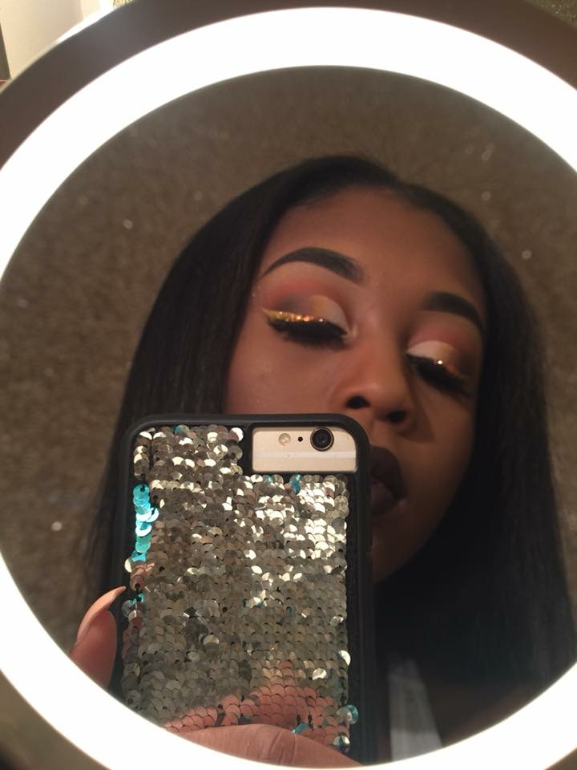
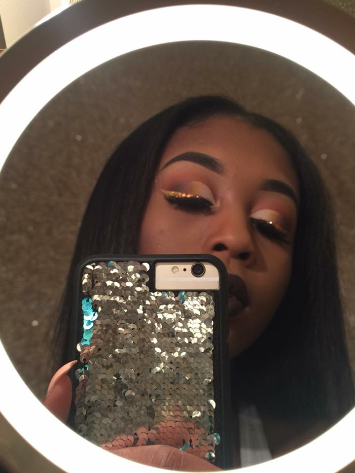
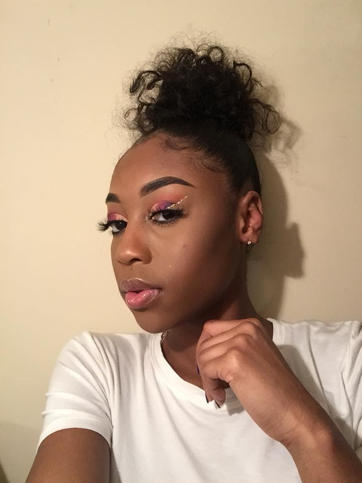
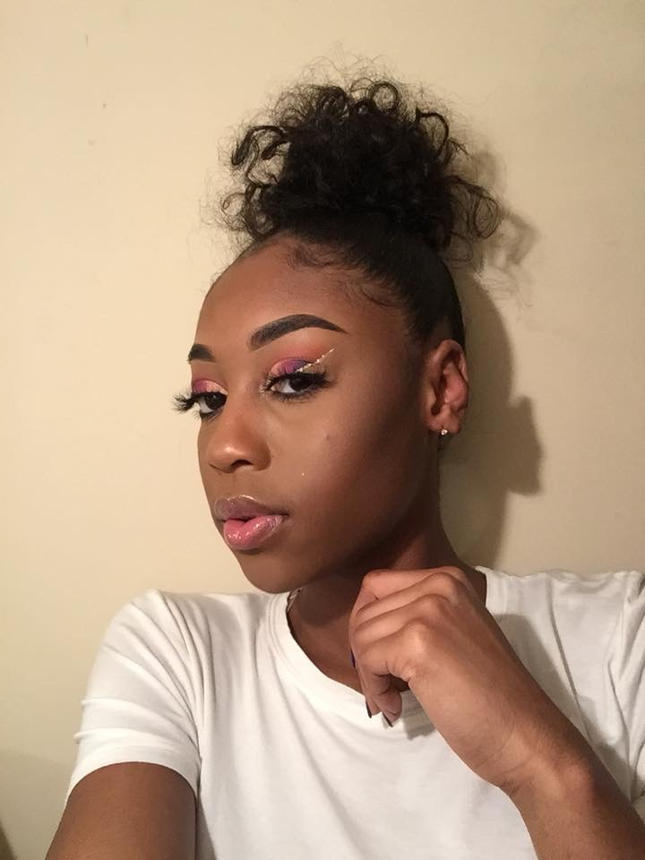
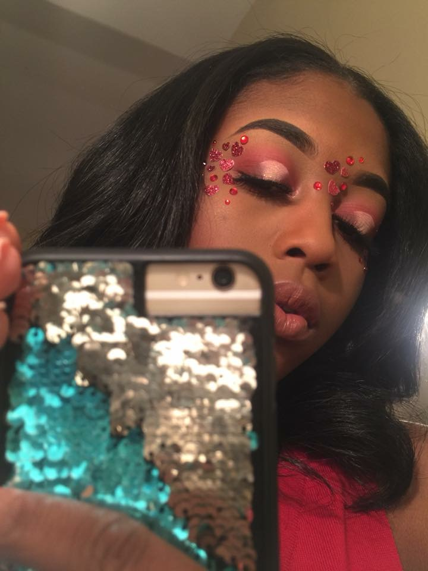
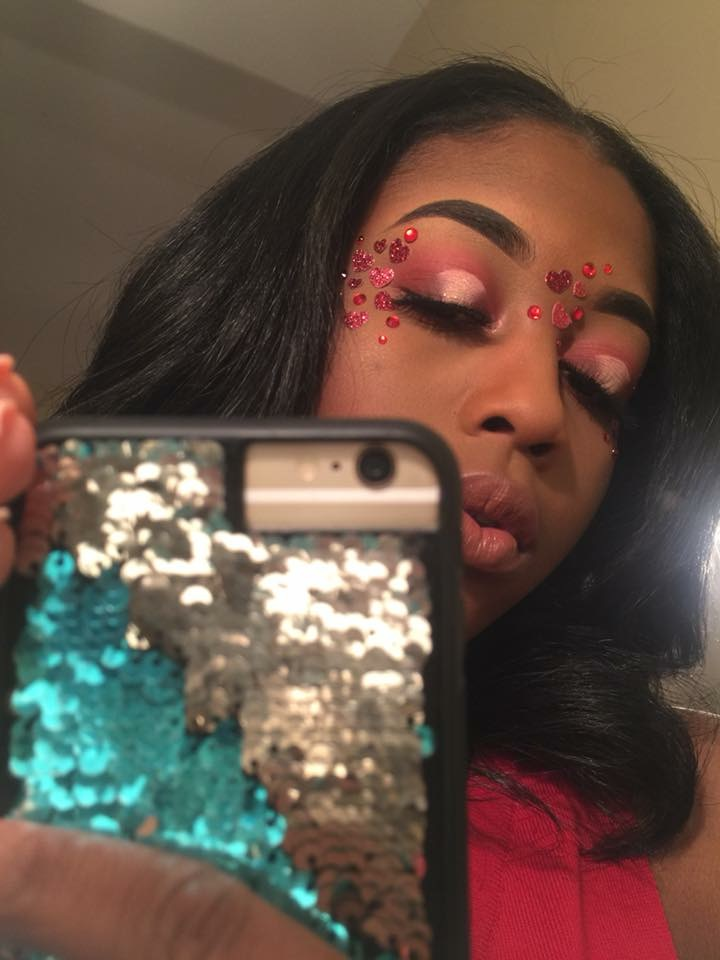
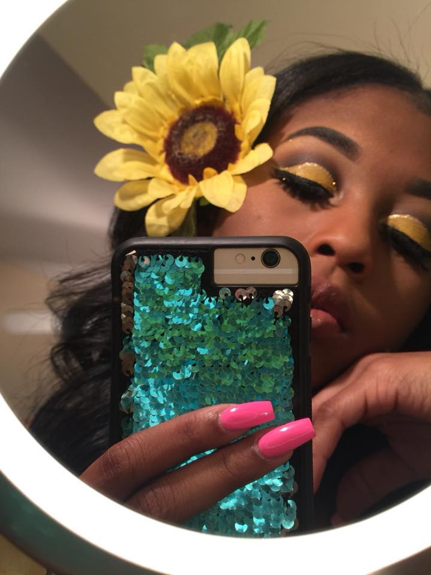
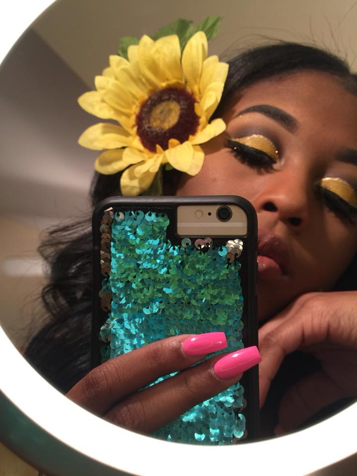

Welcome to my wild side. All of these looks I did when I felt the inspriation to explore my 'exoticness'. In the first look I did an ombre look with black, yellow, and purple with a gold glitter line on my crease. I have
an ombre purple lip and a very nude face with a bold eye.
In the second look i decided to make nude colors pop. I used brown, yellow and a concealer. I did a glitter wing with long beautiful eyelashes to match. My transistion color was an undertone of red-brown and I had a dark brown lip.
In the third look I was feeling a little colorful. I wanted to do a rainbow effect. The colors I chose dark purple, fuchsia, and yellow. I did a pink transition color with a silver glitter line cutting it off. I kept my lips nude with a
tiny bit a gloss because I didn't want to throw off my bold eye.
The fourth look is a Valentines Day look i did in February. I did a shading of a dark pink and red with concealer and glitter on top. I decided to put little hearts all arounf my eyes to really make that red pop because it was primarily
cover by the pink. I kept my lips basic with carmex.
The fifth look is a Sunshine inspired look for spring. I did a very bright yellow with a brown transition color and a glitter crease cut. I kept my lips nude with gloss.
In the sixth look i did a ombre pink and yellow gold glitter look with a pink transition color. I did a white crease cut and long bold eyelashes.
In the last picture I just did different shades of purple. I ombred it with a silver glitter crease cut. My lips were a bold striking purple.


 

 



 

 
